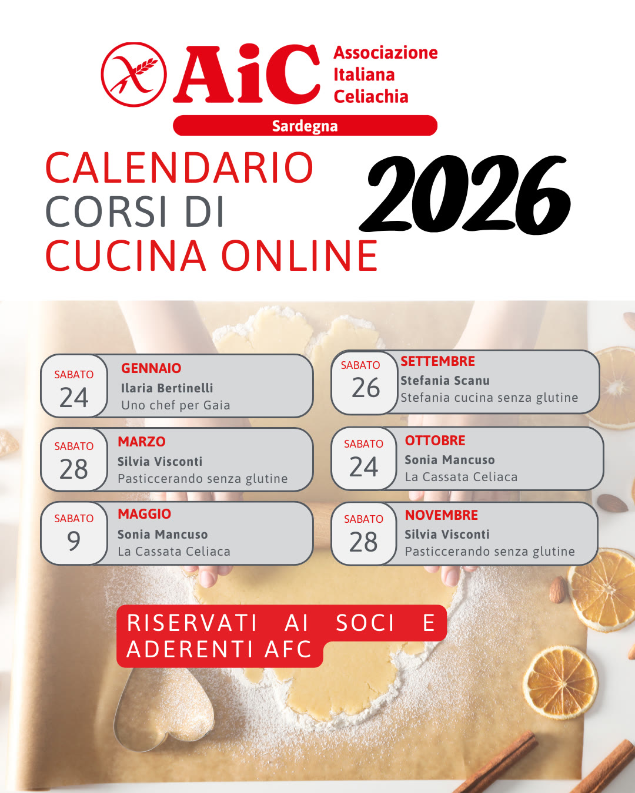

Progetto interregionale · ottobre 2025 – marzo 2027
Educazione, Supporto e Cucina Senza Barriere Rete Interregionale per la Salute e l'Inclusione
Quattro federazioni regionali dell'Associazione Italiana Celiachia in rete con lo scopo di migliorare la qualità della vita delle persone celiache: formazione nelle scuole, supporto nutrizionale e psicologico ai neodiagnosticati, corsi di cucina senza glutine.
- Sardegna capofila
- Piemonte
- Sicilia
- Calabria
Il progetto
Una rete per non affrontare la celiachia da soli
Iniziativa interregionale promossa da AIC Sardegna (come capofila), AIC Piemonte, AIC Sicilia e AIC Calabria, realizzata con il contributo della Fondazione di Sardegna nell'ambito del Bando annuale 2026 “Salute pubblica, medicina preventiva e riabilitativa”.
Un progetto che nasce per rispondere a un bisogno concreto: il supporto per tutti i celiaci, ad iniziare dalla diagnosi dove ansia isolamento e difficoltà pratiche nella gestione della dieta senza glutine sono più frequenti, per continuare poi nelle scuole dove docenti e personale non sempre dispongono di strumenti adeguati per gestire le esigenze alimentari speciali. Il progetto mira a definire degli standard comuni tra le quattro regioni, valorizzando le buone pratiche già esistenti e costruendo una rete stabile, replicabile e orientata alla prevenzione
Le attività si svolgono in gran parte online, per raggiungere anche le zone interne e periferiche, ridurre gli spostamenti e mettere in contatto persone e territori diversi.
Gli obiettivi
- Promuovere l'educazione sanitaria su celiachia, allergie, intolleranze ed esigenze etiche o religiose.
- Fornire a docenti, famiglie e studenti strumenti pratici per ridurre errori e rischi di contaminazione.
- Aumentare autonomia e sicurezza nella vita quotidiana con supporto nutrizionale e corsi di cucina.
- Ridurre ansia e isolamento dei neodiagnosticati attraverso il confronto con professionisti.
- Rafforzare una rete interregionale stabile tra Sardegna, Piemonte, Sicilia e Calabria.
- Realizzare attività online capillari, sostenibili e replicabili oltre la durata del progetto.
Il progetto in numeri obiettivi previsti
- 4associazioni regionali in rete
- 8+istituti scolastici coinvolti, 2 per regione
- 8incontri Q&A con dietista e psicologa
- 4dirette stagionali con le nutrizioniste
- 1.000+partecipanti alle attività online
Le attività
Quattro progetti, un'unica rete
Scuola, supporto psicologico e corsi di cucina: le attività del progetto sono aperte alle persone celiache e alle loro famiglie in tutte e quattro le regioni.
In fuga dal glutine
Un percorso scolastico inclusivo che, attraverso una metodologia ludica, parla ad alunni e insegnanti di celiachia, allergie, intolleranze e scelte etiche o religiose, e più in generale di educazione alla diversità come risorsa e ricchezza.
AIC offre agli insegnanti delle scuole dell'infanzia e primarie materiali didattici uniformati tra le quattro regioni, linee guida per la sicurezza in mensa e strumenti per l'inclusione degli studenti con esigenze alimentari speciali. La formazione dei docenti si svolge online e in presenza; il progetto coinvolge almeno due istituti per regione.
L'approccio è quello del “bicchiere mezzo pieno”: non ciò che chi è celiaco non può fare, ma tutto ciò che di bello può vivere, anche a tavola, in un contesto di vera condivisione.
Cosa impareranno gli alunni
- Riflettere in modo critico sulla diversità di ciascuno nel modo di alimentarsi.
- Vedere la diversità come una risorsa per il benessere comune.
- Conoscere le necessità alimentari della celiachia e di altre condizioni specifiche.
- Coltivare comprensione, condivisione, partecipazione e solidarietà.
- Sviluppare responsabilità individuale unendo divertimento e apprendimento.
Nelle scuole
Calabria
IC “A. Pagano”
Nicotera, Rombiolo, S. Calogero, Cessaniti, Pannaconi (VV)
- 100 docenti e personale formati online
- 120 alunni in 10 classi di infanzia e primaria
220 partecipanti
Calabria
IC Laureana–Galatro–Feroleto–Melicucco
Laureana, Galatro, Feroleto, Melicucco
- 60 docenti e personale formati online
- 60 alunni in 3 classi di infanzia e secondaria
120 partecipanti
Q&A con dietista e psicologa
Un ciclo di incontri informativi online di due ore, rivolti alle persone con celiachia e ai loro familiari: uno spazio di ascolto e confronto per trovare risposte qualificate ai dubbi che emergono dopo la diagnosi e nella vita di tutti i giorni.
Gli incontri sono condotti da una dietista e da una psicologa, entrambe esperte di celiachia, insieme si affronteranno gli aspetti nutrizionali, psicologici e relazionali. Al momento dell'iscrizione è possibile inviare le proprie domande in anticipo, così che l'incontro parta dai bisogni reali dei partecipanti che sapranno rispondere ad ogni dubbio anche durante il colloquio.
Di cosa si parla
- Alimentazione senza glutine e gestione della dieta
- Accettazione della diagnosi
- Pasti fuori casa
- Vita familiare e sociale
- Scuola e lavoro
- Prevenzione delle contaminazioni
La modalità online valorizza la dimensione interregionale del progetto, mettendo in rete persone e territori diversi. Il progetto prevede 8 incontri complessivi.
In breve
- Formato
- Online, 2 ore
- Per chi
- Persone celiache e familiari
- Con
- Dietista e psicologa di AIC Piemonte
- Costo
- Partecipazione gratuita
Prossimi incontri
-
Q&A Celiachia da confermare
-
Secondo incontro
Corsi di cucina senza glutine
Corsi online con chef e food blogger per cucinare senza glutine in sicurezza, con più varietà e con più gusto. Sono organizzati da AIC Sardegna e AIC Calabria e aperti anche ai celiaci delle altre regioni.
I corsi rafforzano l'autonomia in cucina, la sicurezza nella preparazione dei pasti e la varietà della dieta, e sono anche un'occasione di socialità da condividere con amici e familiari.
AIC Sardegna — calendario 2026
Corsi online il sabato, riservati ai soci e aderenti AFC.
-
Uno chef per Gaia
-
Pasticcerando senza glutine
-
La Cassata Celiaca
-
Stefania cucina senza glutine
-
La Cassata Celiaca
-
Pasticcerando senza glutine
Info e iscrizioni su AIC Sardegna (si apre in una nuova scheda) link pagina corsi da confermare

AIC Calabria
Celiaca all'improvviso
I corsi online di cucina gluten free di AIC Calabria: una parte delle lezioni è realizzata nell'ambito di questo progetto.
Scopri i corsi su AIC Calabria (si apre in una nuova scheda)Dirette con le nutrizioniste
Quattro dirette Instagram, una per ogni stagione, in cui le nutrizioniste parlano di educazione alimentare,suggeriscono menù in base alla stagionalità dei prodotti e spiegano come prevenire le carenze e gestire le occasioni di socialità.
-
Autunno
Alimentazione per celiachia: i consigli autunnali delle nutrizioniste
-
Inverno
4 stagioni, 0 glutine: Piacere e benessere a tavola – Edizione inverno
-
Primavera
4 stagioni, 0 glutine: Piacere e benessere a tavola
-
Estate
4 stagioni, 0 glutine: Piacere e benessere a tavola
Segui le attività di AIC Calabria (si apre in una nuova scheda) link a profilo o registrazioni da confermare
Marzo 2027 · Sardegna data da confermare
Evento finale
Il progetto si conclude in Sardegna con conferenze, workshop e la presentazione dei risultati, per rafforzare la rete tra professionisti, scuole, famiglie e associazioni. Sarà possibile partecipare anche online.
Le associazioni
Chi fa parte della rete
Le quattro associazioni regionali aderiscono alla rete nazionale dell'Associazione Italiana Celiachia. Sui loro siti trovi approfondimenti, calendari aggiornati e modalità di partecipazione alle attività.
-
Capofila
AIC Sardegna
Promuove progetti nelle scuole dell'infanzia e primarie, negli istituti alberghieri e corsi per i ristoratori, e favorisce momenti di incontro tra celiaci, nutrizionisti e psicoterapeuti. Coordina il progetto e organizza i corsi di cucina online.
sardegna.celiachia.it (si apre in una nuova scheda) -
Partner
AIC Piemonte
Si occupa di informazione, tutela e supporto ai neodiagnosticati, con formazione nelle scuole e nella ristorazione. Nel progetto porta la sua esperienza nella formazione online e negli incontri Q&A con dietista e psicologa.
piemonte.celiachia.it (si apre in una nuova scheda) -
Partner
AIC Sicilia
Offre tutela, informazione e supporto ai neodiagnosticati e formazione a famiglie, scuole, professionisti della salute e ristorazione. Nel progetto mette a disposizione la rete territoriale, i volontari e le attività già programmate. attività specifiche da confermare
sicilia.celiachia.it (si apre in una nuova scheda) -
Partner
AIC Calabria
Assiste i celiaci calabresi e le loro famiglie e promuove percorsi formativi per scuole e ristorazione. Nel progetto cura le dirette stagionali con le nutrizioniste e i corsi di cucina “Celiaca all'improvviso”.
calabria.celiachia.it (si apre in una nuova scheda)